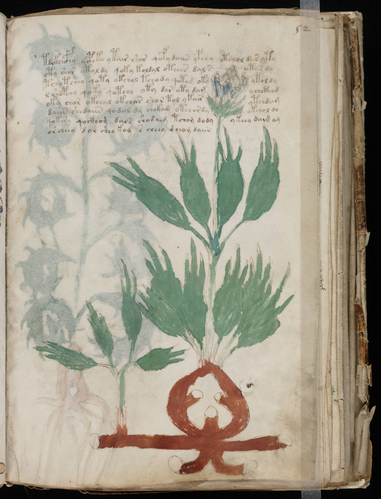

f52r
1tdokchcfhy ycphko ytair shar qofydaiin ypchy otchol das yty2oty shor ytoldy qoky koldal oteees dal sotar dl3tchotshey qoty okchol tchody qotam okyytoldy4l shopchy qoky qotchy oty dar oty damychcthod5oky chor okchal okchar shor tol ykairytchdam6daiin shedaiin qodal dy chokam otchordyokchol do7qokshy qockhom dals shodaim tchom dodyykeey daim am8orcheey dor shey kom s cheey dchom daiin
